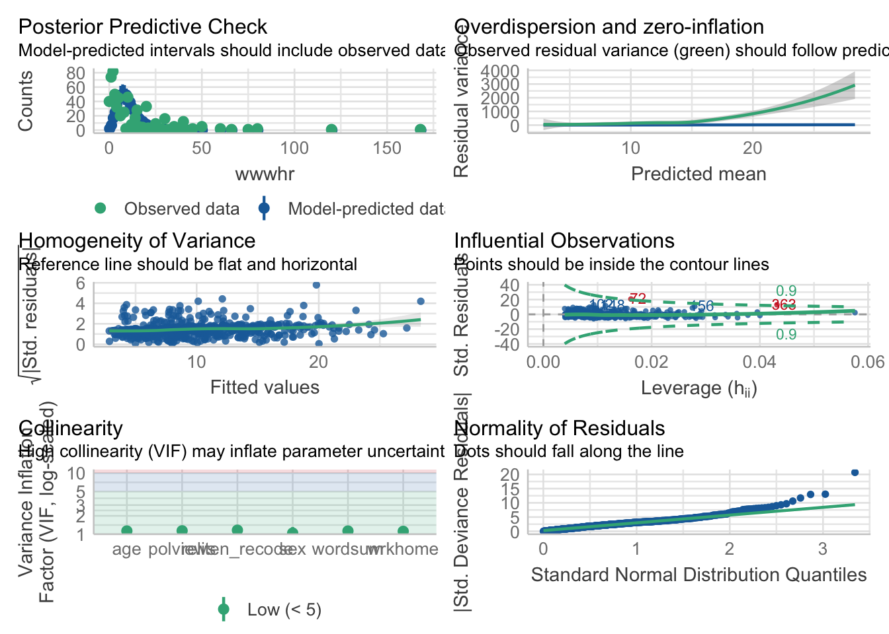

library(MASS)
library(tidyverse)
library(emmeans)
library(ggeffects)
library(easystats)
library(performance)
library(knitr)Lab 6 - Poisson - Answers
- To complete this lab:
- Load packages
- Download the dataset:
library(tidyverse)
data <- read_delim("https://raw.githubusercontent.com/jgeller112/psy504-advanced-stats/main/slides/Poisson/data/2010.csv")- Conduct the analysis described in the preregistration document
- The number of hours per week that a person spends on the Internet (“WWWHR”) will
be predicted by their vocabulary (“WORDSUM”), age (“AGE”), sex (“SEX”), religiosity
(“RELITEN”), political orientation (“POLVIEWS”), and how often they work from home
(“WRKHOME”).
data_pos <- data %>%
dplyr::select(wwwhr, wordsum, age, sex, reliten, polviews, wrkhome) %>%
mutate(wwwhr=case_when(
wwwhr==-1 ~ NA_real_,
wwwhr==998 ~ NA_real_,
wwwhr==999 ~ NA_real_,
TRUE ~ wwwhr),
wordsum=case_when(
wordsum==-1 ~ NA_real_,
wordsum==99 ~ NA_real_,
TRUE ~ wordsum),
case_when(
reliten==0 ~ NA_real_,
reliten==8 ~ NA_real_,
reliten==9 ~ NA_real_,
TRUE~reliten),
polviews=case_when(
polviews==0 ~ NA_real_,
polviews==8 ~ NA_real_,
polviews==9 ~ NA_real_,
TRUE ~ polviews),
wrkhome=case_when(
wrkhome==0 ~ NA_real_,
wrkhome==8 ~ NA_real_,
wrkhome==9 ~ NA_real_,
TRUE ~ wrkhome),
age = case_when(
age == 0 ~ NA_real_,
age == 98 ~ NA_real_,
age == 99 ~ NA_real_,
TRUE ~ age))NANIAR
- could use the
naniarfunctionreplace_with_na
library(naniar)
data_pos <- data %>%
dplyr::select(wwwhr, wordsum, age, sex, reliten, polviews, wrkhome) %>%
replace_with_na(.,
replace = list(wwwhr = c(-1, 998, 999),
wordsum = c(-1, 99),
reliten = c(0, 8, 9),
polviews = c(0, 8, 9),
wrkhome = c(0,8,9),
age=c(0, 98, 99)))- Recode sex as factor
data_pos <- data_pos %>%
mutate(sex=as.factor(sex))Recode reliten
::: {.cell}
data_pos <- data_pos %>% mutate(reliten_recode = case_when( reliten==3 ~2, reliten==2 ~ 3, TRUE ~ reliten )) data_pos %>% dplyr::select(reliten, reliten_recode)::: {.cell-output .cell-output-stdout}
# A tibble: 2,044 × 2 reliten reliten_recode <dbl> <dbl> 1 1 1 2 4 4 3 1 1 4 1 1 5 1 1 6 4 4 7 3 2 8 1 1 9 1 1 10 1 1 # ℹ 2,034 more rows::: :::
Missingness
library(skimr)
skimr::skim(data_pos)| Name | data_pos |
| Number of rows | 2044 |
| Number of columns | 8 |
| _______________________ | |
| Column type frequency: | |
| factor | 1 |
| numeric | 7 |
| ________________________ | |
| Group variables | None |
Variable type: factor
| skim_variable | n_missing | complete_rate | ordered | n_unique | top_counts |
|---|---|---|---|---|---|
| sex | 0 | 1 | FALSE | 2 | -1: 1153, 1: 891 |
Variable type: numeric
| skim_variable | n_missing | complete_rate | mean | sd | p0 | p25 | p50 | p75 | p100 | hist |
|---|---|---|---|---|---|---|---|---|---|---|
| wwwhr | 996 | 0.51 | 9.79 | 13.41 | 0 | 2 | 5 | 14 | 168 | ▇▁▁▁▁ |
| wordsum | 657 | 0.68 | 6.03 | 2.07 | 0 | 5 | 6 | 7 | 10 | ▁▃▇▅▂ |
| age | 3 | 1.00 | 47.97 | 17.68 | 18 | 33 | 47 | 61 | 89 | ▇▇▇▅▃ |
| reliten | 99 | 0.95 | 2.08 | 1.08 | 1 | 1 | 2 | 3 | 4 | ▇▇▁▂▃ |
| polviews | 71 | 0.97 | 4.08 | 1.46 | 1 | 3 | 4 | 5 | 7 | ▃▂▇▃▅ |
| wrkhome | 882 | 0.57 | 2.26 | 1.72 | 1 | 1 | 1 | 4 | 6 | ▇▁▁▂▁ |
| reliten_recode | 99 | 0.95 | 2.39 | 1.16 | 1 | 1 | 3 | 3 | 4 | ▇▂▁▇▃ |
Fit Poisson
pos_mod <- glm(wwwhr~wordsum+age+sex+reliten_recode+polviews+wrkhome, family=poisson(), data=data_pos)Checking Assumptions
Performance - check_model
check_model(pos_mod)
outliers_list <- check_outliers(pos_mod) # Find outliers
outliers_list # Show the row index of the outliers2 outliers detected: cases 72, 363.
- Based on the following method and threshold: cook (0.9).
- For variable: (Whole model).outliers_list <- as.numeric(outliers_list) # The object is a binary vector...
filtered_data <- as.data.frame(data_pos)[!outliers_list, ] # And can be used to filter a dataframe- Refit after outlier exclusion
pos_mod <- glm(wwwhr~wordsum+age+sex+reliten_recode+polviews+wrkhome, family=poisson, data=filtered_data)
model_parameters(pos_mod) %>%
print_html()| Parameter | Coefficient | SE | 95% CI | z | p |
|---|---|---|---|---|---|
| (Intercept) | 1.56 | 0.09 | (1.39, 1.72) | 18.19 | < .001 |
| wordsum | 0.11 | 7.72e-03 | (0.09, 0.12) | 13.76 | < .001 |
| age | -0.02 | 1.08e-03 | (-0.02, -0.02) | -16.11 | < .001 |
| sex (1) | 0.25 | 0.03 | (0.20, 0.30) | 9.35 | < .001 |
| reliten recode | 0.21 | 0.01 | (0.18, 0.23) | 16.02 | < .001 |
| polviews | -0.04 | 9.75e-03 | (-0.06, -0.02) | -3.77 | < .001 |
| wrkhome | 0.08 | 7.67e-03 | (0.07, 0.10) | 10.50 | < .001 |
Overdispersion
library(performance)
check_overdispersion(pos_mod)# Overdispersion test
dispersion ratio = 14.732
Pearson's Chi-Squared = 8750.592
p-value = < 0.001Our model appears to be over-dispersed. Let’s fit a negative binomial!
Let’s check if the negative binomial solved are problem:
library(MASS)
pos_mod_nb <- glm.nb(wwwhr~wordsum+age+sex+reliten_recode+polviews+wrkhome, data=filtered_data)
model_parameters(pos_mod_nb) %>%
print_html()| Parameter | Coefficient | SE | 95% CI | z | p |
|---|---|---|---|---|---|
| (Intercept) | 1.66 | 0.28 | (1.12, 2.21) | 6.00 | < .001 |
| wordsum | 0.11 | 0.03 | (0.05, 0.16) | 4.19 | < .001 |
| age | -0.02 | 3.50e-03 | (-0.02, -0.01) | -4.91 | < .001 |
| sex (1) | 0.16 | 0.09 | (-0.02, 0.34) | 1.79 | 0.073 |
| reliten recode | 0.20 | 0.04 | (0.12, 0.27) | 4.81 | < .001 |
| polviews | -0.04 | 0.03 | (-0.10, 0.03) | -1.10 | 0.270 |
| wrkhome | 0.06 | 0.03 | (7.36e-03, 0.12) | 2.25 | 0.025 |
Which one is better?
test_likelihoodratio(pos_mod, pos_mod_nb)# Likelihood-Ratio-Test (LRT) for Model Comparison (ML-estimator)
Name | Model | df | df_diff | Chi2 | p
-----------------------------------------------------
pos_mod | glm | 7 | | |
pos_mod_nb | negbin | 8 | 1 | 4606.62 | < .001- Negative binom appears to be better!
check_zeroinflation(pos_mod_nb)# Check for zero-inflation
Observed zeros: 40
Predicted zeros: 67
Ratio: 1.68- No zero-inflation!
model_parameters(pos_mod_nb) %>%
print_html()| Parameter | Coefficient | SE | 95% CI | z | p |
|---|---|---|---|---|---|
| (Intercept) | 1.66 | 0.28 | (1.12, 2.21) | 6.00 | < .001 |
| wordsum | 0.11 | 0.03 | (0.05, 0.16) | 4.19 | < .001 |
| age | -0.02 | 3.50e-03 | (-0.02, -0.01) | -4.91 | < .001 |
| sex (1) | 0.16 | 0.09 | (-0.02, 0.34) | 1.79 | 0.073 |
| reliten recode | 0.20 | 0.04 | (0.12, 0.27) | 4.81 | < .001 |
| polviews | -0.04 | 0.03 | (-0.10, 0.03) | -1.10 | 0.270 |
| wrkhome | 0.06 | 0.03 | (7.36e-03, 0.12) | 2.25 | 0.025 |
model_parameters(pos_mod_nb, exponentiate = TRUE) %>%
print_html()| Parameter | Coefficient | SE | 95% CI | z | p |
|---|---|---|---|---|---|
| (Intercept) | 5.26 | 1.46 | (3.06, 9.09) | 6.00 | < .001 |
| wordsum | 1.11 | 0.03 | (1.06, 1.18) | 4.19 | < .001 |
| age | 0.98 | 3.44e-03 | (0.98, 0.99) | -4.91 | < .001 |
| sex (1) | 1.17 | 0.11 | (0.98, 1.41) | 1.79 | 0.073 |
| reliten recode | 1.22 | 0.05 | (1.12, 1.32) | 4.81 | < .001 |
| polviews | 0.96 | 0.03 | (0.90, 1.03) | -1.10 | 0.270 |
| wrkhome | 1.06 | 0.03 | (1.01, 1.12) | 2.25 | 0.025 |
The analysis employed a negative binomial regression model in R to examine the relationship between sex, age, vocabulary, religious and political views, and time spent on the internet per hour. An over-dispersion test was conducted using the performance package in R to determine the appropriateness of the model.
The analysis revealed that each additional point in the vocabulary test was associated with an increase of 11% in the expected count of hours spent on the internet per week, incidence rate ratio (IRR) = 1.11, SE = .01, p < .001. Increases in religiosity and work-from-home frequency were also associated with increased time spent on the internet, IRR = 1.10, SE = .03, p < .001, and IRR = 1.06, SE = .02, p < .001, respectively. Relative to females, males in our dataset spent more hours online, IRR = 1.28, SE = .05, p < .001, d = 1.28. Two variables, age and political orientation, were negatively associated with time spent on the internet. Older respondents and the more politically conservative spent less time online, IRR = .98, SE = .002, p < .001, d = .98, and IRR = .96, SE = .02, p = .01, d = .96, respectively.